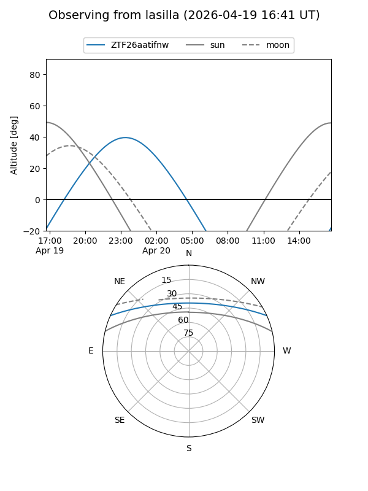
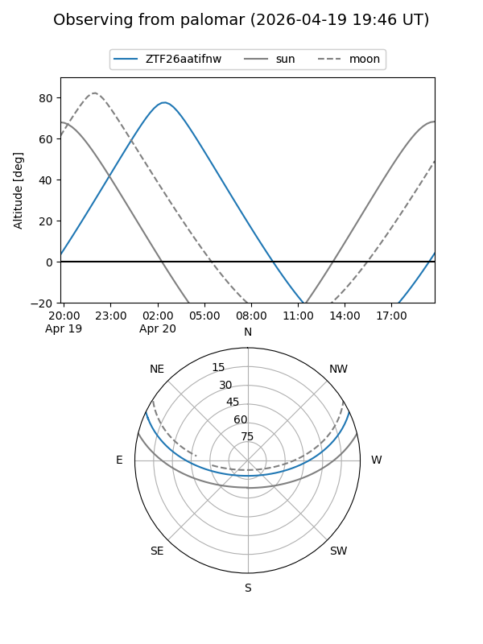

ZTF26aatifnw
Target ZTF26aatifnw at 2026-04-20 04:52
Aliases and brokers:
FINK: link
Lasair: link
ALeRCE: link
alt names
ZTF26aatifnw (ztf,fink_ztf)
Coordinates:
equatorial (ra, dec) = 127.6144,+21.16225
equatorial (HMS+DMS) = 08:30:27.45,+21:09:44.10
galactic (l, b) = (203.3321,+30.80740)
Flags:
Photometry:
last ztfg=19.68
1 ztfg detections
Lightcurve
Visibility


Additional plots